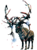
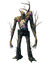
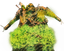
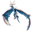
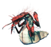
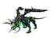
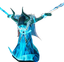
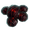

弃誓者祭坛
本站支持中英文站内搜索。带 ↗ 的链接指向外部网站；各页来源版本见页脚。

GDKing
Bonemass
Dragonqueen
GoblinKing
FaderLocation
弃誓者祭坛是地点，用于召唤首领。每位首领有自身祭坛，需要献祭一定数量的特定物品。
用途
目前八位首领共有八种祭坛。寻找祭坛需探索地下城和废墟，寻找称为指路符文的小型发光符文石。激活后，会在地图标出祭坛位置。
找到后，将召唤物放在祭坛附近指定位置，才能激活。每座祭坛上或附近有符文石，提示所需祭品。激活后首领出现，成功击败前不会消失。同一祭坛可按需无限次重新召唤。
击败后可返回献祭石阵，将战利品挂在对应石头上，激活放逐之力。放逐之力可无限使用，但两次之间有冷却。
祭坛
| 图片 | 名称 | 符文石文本 | 召唤物品 | 生物群系 | 祭坛位置 | 指引石位置 | |
|---|---|---|---|---|---|---|---|
| 第一次来 | 后续次数 | ||||||
 |
神秘祭坛 | 猎其亲族 | 青青草原 | 3祭坛, 距世界中心≤1000m |
献祭石阵 | ||
 |
上古之盎 | 焚其幼子 | 黑暗林山 | 4座祭坛，每座相距3000m， 距离世界中心1000m – 7000m |
黑暗林山废墟 诡秘墓穴 | ||
 |
化骨池祭坛 | 烹其遗骸 | 幽暗沼泽 | 5座祭坛，每座相距3000m， 距世界中心≥2000m |
泥泞沼泽废墟 地下圣堂 | ||
 |
献祭坛 | 祭其之卵 | 凛冽雪山 | 3座祭坛，每座相距3000m， 距世界中心≤8000m |
凛冽雪山 石头塔楼 冰霜洞穴 | ||
| 神秘祭坛 | 他垂死的灵魂被分割，由所有同族共同承受 | 北境平原 | 4座祭坛，每座相距3000m | 巨石阵 | |||
 |
腐疫地堡 (蜂巢王座) |
我们锁其门，弃其钥。且任其自生自灭吧。[祭坛1] | 迷雾之地 | 5座祭坛，每座相距2048m | 虫巢矿洞 | ||
 |
翠焰祭坛 | 鸣其之钟 | 灰烬之地 | 3祭坛 | 灰烬之地废墟 | ||
 |
阿萨神族通道 (监狱) |
 3 邪恶之血 |
极北之地 | 3祭坛 | 纪念场地 墨尔克哈拉 | ||


图片库
-
赤血灵鹿的神秘祭坛
-
古树长老的上古之盎
-
邪骨恶灵的化骨池祭坛
-
冰霜龙母的献祭坛
-
 亚格鲁斯的神秘祭坛
亚格鲁斯的神秘祭坛 -
 蛊虫之后的虫巢城堡（外部）
蛊虫之后的虫巢城堡（外部） -
 蛊虫之后的虫巢座
蛊虫之后的虫巢座 -
青焰龙王竞技场
-
凌冽·芬布尔使者的阿萨神族通道（外部）


说明
- 同一世界种子中，一位首领可能有多座召唤祭坛。
- 只要在祭坛献上正确物品，玩家可按任意顺序召唤首领。
- 召唤后，玩家离开战斗、传送、退出或死亡，都不会使首领消失。
- 神秘力量阻止在青焰龙王的祭坛周围建造，类似献祭石阵。
- 古树长老祭坛远古火盆中的火永不需燃料、永不熄灭，适合将祭坛用作基地地基。
- 蛊虫之后和凌冽·芬布尔使者在类似地下城的独立室内战场作战，其余首领在露天作战。
| 生物群系 | |||||||||||||||||||
|---|---|---|---|---|---|---|---|---|---|---|---|---|---|---|---|---|---|---|---|
| 重要 地点 |
| ||||||||||||||||||
| 资源 采集点 |
| ||||||||||||||||||
GDKing
Bonemass
Dragonqueen
GoblinKing
FaderLocation
Forsaken Altars are points of interest. They are used to summon bosses, each having its own altar that requires the sacrifice of a number of specific items.
Usage
There are currently eight altars for all eight bosses. Locating an altar requires a venture into various dungeons and ruined structures to locate small glowing Runestones called Vegvisirs. Activating these stones will then mark the altar location on the map.
Once found, the summoning items must be placed down in their designated positions near the altar before it can be activated. Each altar has a Runestone on or near it to provide players with a hint as to which summoning item(s) are needed. Upon activation, the boss will spawn and will not despawn until it has been successfully defeated. Bosses may be resummoned from the same altar as many times as desired.
After a boss has been defeated, players may return to the Sacrificial Stones which will grant the ability to hang the trophy on their respective stone and allows them to activate its Forsaken power. Forsaken powers can be used infinitely, but each has a cooldown period between uses.
Altars
| Image | Name | Runestone text | Summoning item | Biome | Altar placements | Vegvisir location | |
|---|---|---|---|---|---|---|---|
| First time | Subsequent times | ||||||
| Mystical altar | HUNT HIS KIN | Meadows | 3 altars, ≤ 1000m from world center |
Sacrificial Stones | |||
| Ancient bowl | BURN THEIR YOUNG | Black Forest | 4 altars, each 3000m apart, 1000m – 7000m from world center |
Black Forest ruins Burial Chambers | |||
| Boiling death altar | COOK THEIR REMAINS | Swamp | 5 altars, each 3000m apart, ≥ 2000m from world center |
Swamp ruins Sunken Crypts | |||
| Sacrificial altar | SACRIFICE HER SPAWN | Mountain | 3 altars, each 3000m apart, ≤ 8000m from world center |
Mountain stone towers Frost Caves | |||
| Mystical altar | AND HIS DYING SOUL WAS SPLIT AND SHARED AMONG ALL HIS KIN | Plains | 4 altars, each 3000m apart | Stonehenges | |||
| Infested Citadel (Hive seat) |
We sealed the door and scattered the key. Leave her be.[altar 1] | Mistlands | 5 altars, each 2048m apart | Infested Mines | |||
| The Altar of Emerald Flame | RING HIS PRAISE | Ashlands | 3 altars | Ashlands ruins | |||
| Aesir Passage (The Prison) |
3 Malicious Blood | Deep North | 3 altars | Memorial Sites Mörkhalla | |||
Gallery
-
Eithykr's Mystical altar
-
The Elder's Ancient bowl
-
Bonemass' Boiling death altar
-
Moder's Sacrificial altar
-
Yagluth's Mystical altar
-
The Queen's Infested Citadel (exterior)
-
The Queen's Hive seat
-
Fader's Arena
-
Kall Fimbulbringer's Aesir Passage (exterior)
Notes
- A boss may have multiple summoning altars within a unique world seed.
- Players can summon bosses in any order as long as they offer the right items at Forsaken Altars.
- Once summoned, bosses will not despawn upon the player leaving combat, using a Portal, logging out or dying.
- A mystical force blocks structures being built around Fader's altar, similar to the Sacrificial Stones.
- The fire in the Ancient Bowl at the Elder's altar never needs fuel and never goes out, convenient if you use the altar as foundations for a base.
- The Queen and Kall Fimbulbringer are fought in instanced indoor arenas (akin to dungeons), the rest of the bosses are fought out in the open.
| Biomes | Meadows • Black Forest • Ocean • Swamp • Mountain • Plains • Mistlands • Ashlands • Deep North • World Edge | ||||||||||||||||||
|---|---|---|---|---|---|---|---|---|---|---|---|---|---|---|---|---|---|---|---|
| Points of interest |
| ||||||||||||||||||
| Resource nodes |
| ||||||||||||||||||